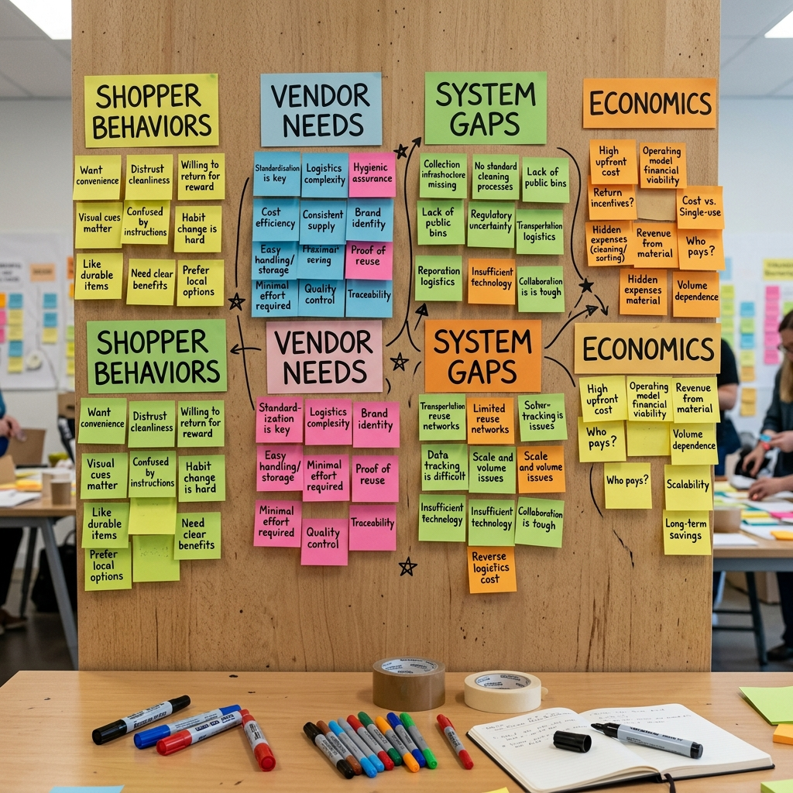
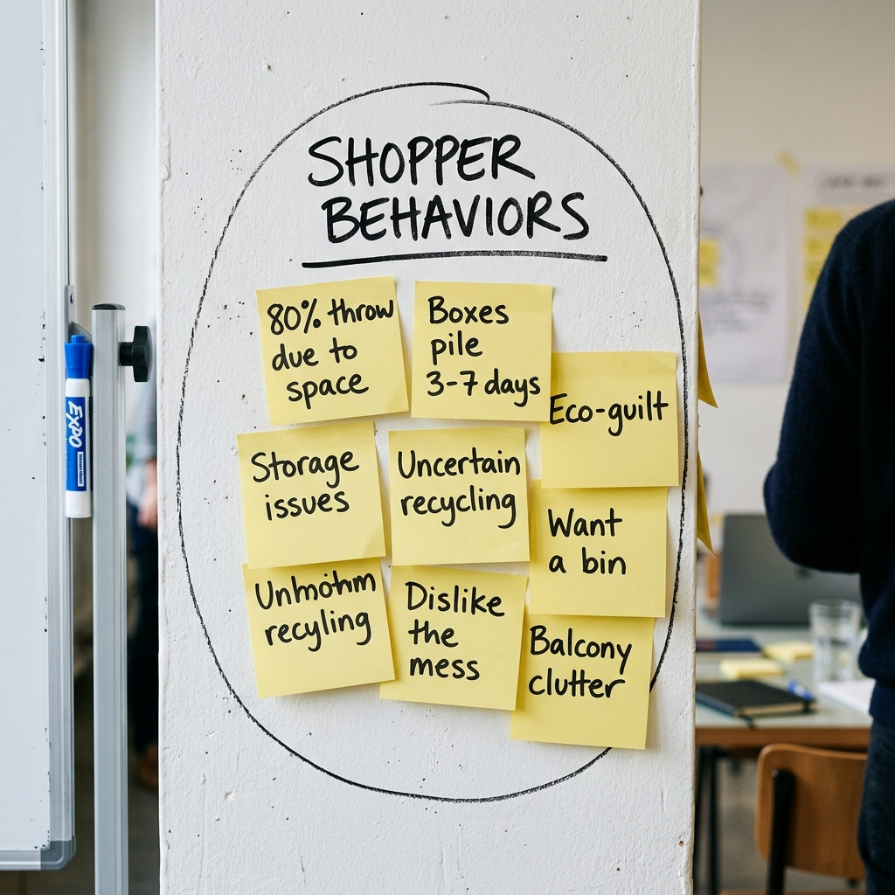
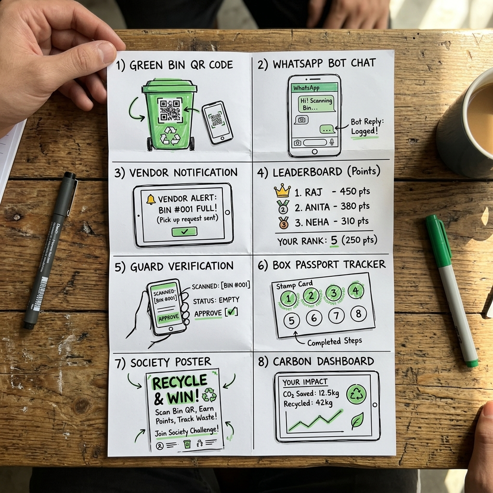
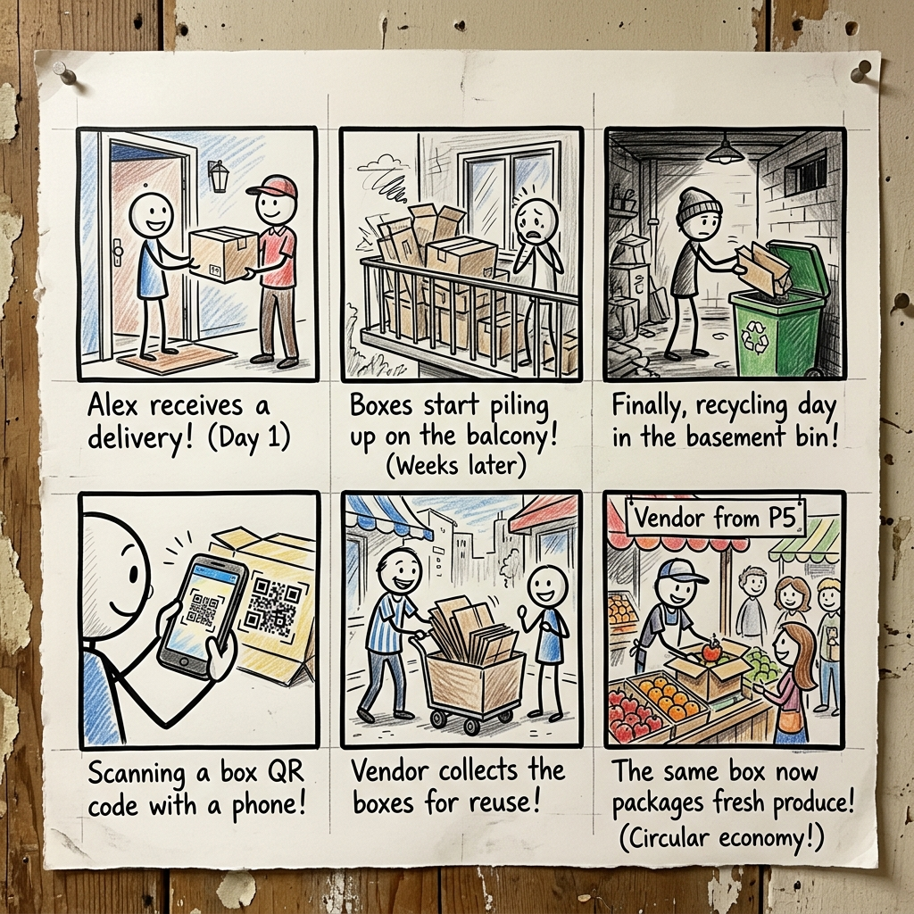

1. Executive Summary
ReBox is an innovative, high-impact circular economy system designed to address the massive packaging waste generated by the e-commerce boom in urban India. By intercepting structurally intact cardboard boxes at the apartment level and redirecting them to local micro-vendors, ReBox bridges a critical resource gap. Every day, approximately 15 million e-commerce parcels are shipped across India, resulting in millions of single-use corrugated cardboard boxes being discarded. The current waste management pipeline is almost entirely linear: residents discard boxes, municipal waste handlers or informal scrap dealers collect them, and they are eventually sold to pulp recycling mills for a meager Rs. 3 per box (calculated by weight). This process is energy-intensive, chemical-heavy, and downcycles high-quality long fibers after only a single use. Meanwhile, local retail vendors, kirana store owners, bakeries, and hyper-local couriers routinely pay Rs. 20–35 for a brand new cardboard box of equivalent size.
The ReBox platform provides a closed-loop alternative that prioritizes REUSE over recycling. The system consists of three integrated layers: (1) Physical Collection Bins: Weather-proof green bins placed in gated apartment basements adjacent to elevator lobbies, providing a zero-friction disposal point; (2) Twilio WhatsApp Bot: A lightweight, QR-enabled mobile interface that allows residents to log drops in under 15 seconds and alerts registered vendors when boxes are ready for pickup, eliminating the need to download dedicated mobile applications; and (3) Analytics Dashboard: A web-based portal that tracks community leaderboards, RWA waste audits, and individualized carbon offset metrics (saving approximately 1.1 tonnes of CO₂ equivalent and 26,000 liters of water per tonne of corrugated paper reused). This report documents the complete, five-phase Design Thinking lifecycle of ReBox, demonstrating its viability, operational feasibility, and high user acceptance through extensive on-ground testing across Bengaluru, Hyderabad, Tumkur, Bidar, Kadapa, and Tirupati.
2. Brainstorming: 3-Tier System
During the Ideate phase, our team brainstormed solutions across three technology tiers to ensure the ReBox system works for all users, regardless of tech literacy or budget constraints. The brainstorming process was structured around the core objective of maximizing community adoption while keeping the operational overhead extremely low. Since gated communities feature diverse demographics—ranging from tech-savvy young professionals to elderly residents who prefer simple physical routines—we realized that a single monolithic software solution would fail. A tiered tech strategy ensures that the system provides immediate, low-friction touchpoints (like physical collection bins) while leveraging automated communication tools (like WhatsApp chatbots) and cloud analytics dashboards for long-term tracking and gamification. By separating features into Low-Tech, Mid-Tech, and High-Tech tiers, we designed a resilient system where a failure in the digital layer does not halt the physical flow of cardboard reuse:
Tier 1: Low-Tech Options
Focuses on physical, near-zero cost solutions:
- Dedicated physical green collection bins placed in apartment basement elevator lobbies adjacent to walking paths.
- Bilingual educational posters next to bins explaining acceptable box sizes (S/M/L) and flattening steps.
- Local society WhatsApp groups where residents list boxes and vendors claim them manually.
- A mechanical box flattener and tape cutter are anchored directly to the bin to help residents prepare materials in under 10 seconds.
Tier 2: Mid-Tech Options
Adds lightweight, automated scheduling without app downloads:
- QR-enabled bins. Scanning the QR code opens a chat session with a Twilio WhatsApp Bot.
- WhatsApp Bot registers drops, logs box count, and notifies gate security guards automatically.
- Hyper-local SMS/WhatsApp broadcasts to registered shopkeepers within 500m walkshed when bins are 80% full.
- Unique QR metadata that auto-identifies the society name, tower block, and basement location automatically.
Tier 3: High-Tech Options
Scalable, data-driven cloud dashboards for future expansion:
- Resident Dashboard: An interactive portal tracking carbon offset statistics, trees saved, and community leaderboard ranks.
- Vendor Portal: A map-based dashboard showing box inventory at nearby apartment complexes with batch reservation buttons.
- Society Admin Portal: An RWA audit dashboard tracking paper waste diverted from landfills and carbon credits earned.
- Smart Weight Sensors: IoT-based sensors inside bins that transmit fill levels to a central cloud database in real-time.
3. Brain Activity (Dump, Wired, Walk)
We used three collaborative design thinking activities to generate a wide range of ideas and gain practical context. These activities helped us move from abstract sustainability concepts to specific operational mechanics:
Brain Dump
A 5-minute silent, unfiltered generation session where we wrote down 47 raw ideas. The primary rule of this exercise was to suspend judgment and prioritize volume over feasibility. The resulting ideas ranged from highly speculative (e.g., drone-based packaging delivery and automated cardboard sorting robotics) to extremely practical (e.g., placing green bins in basements and using WhatsApp bots). By sorting these dump notes, we realized that the central friction point for residents was storage space, which led us to prioritize basement collection as a core requirement.
Brain Wired
We connected unrelated service models to our challenge, borrowing mechanics from successful digital platforms. The 'Uber for Boxes' analogy helped us design an on-demand routing and pickup system where local merchants are notified only when a nearby bin has enough boxes to justify a short walk. Similarly, we applied 'Instagram/Duolingo gamification' to design a community dashboard that converts dry paper weight into clear, gamified milestones (e.g., 'Your block saved 1.5 trees this week!') to sustain engagement.
Brain Walk (Field Observations)
A field walk around HSR Layout, Bengaluru, which revealed that local shopkeepers stack boxes on pavements and that security guards are the natural operators of gated complex delivery gates. We observed that guards already manage a complex check-in process for visitors and delivery agents. Integrating a quick barcode scan or validation step into their daily routine was highly feasible, as it did not require them to learn complex new workflows.


4. Crazy 8 Ideas
Each team member sketched 8 distinct ideas in 8 minutes. We consolidated these sketches into a table of 8 core system concepts. These concepts formed the functional blueprint for our physical prototypes and interactive clickable UI mockups:
| Idea # | Concept | Description | System Layer |
|---|---|---|---|
| 1 | Smart Bins | Weight sensor alerts the system when the bin is 80% full. | Physical Layer (L1) |
| 2 | QR Drop Log | Scanning QR code opens a WhatsApp chat to log box counts. | Digital Interface (L2) |
| 3 | Eco-Leaderboard | Society ranking of blocks based on boxes saved. | Engagement Layer (L3) |
| 4 | Scheduled Vendor Run | Local vendors set a weekly schedule for box pickups. | Logistics Layer |
| 5 | Condition Labels | Stickers indicating box reuse cycles (sturdy vs. ready for recycling). | Physical Layer (L1) |
| 6 | Auto-Match Bot | System automatically matches box sizes to vendor needs. | Orchestration Layer |
| 7 | Trees Saved Counter | A screen on the bin showing environmental impact metrics. | Physical Layer (L1) |
| 8 | Guard Portal | A simple dashboard for guards to verify vendor pickups. | Interface Layer (L2) |

5. Worst Possible Idea & Challenging Assumptions
To break free from conventional design patterns, we executed a 'Worst Possible Idea' session. We intentionally designed the most inconvenient, expensive, and bureaucratic recycling system imaginable. For instance, we suggested requiring residents to download a 200MB app just to drop off a single box, weighing each box on a postal scale, and charging residents a fee. By flipping these absurd scenarios, we established our core design constraints: the user experience must be WhatsApp-first, box sorting must rely on simple visual sizes, and external pick-ups must run through pre-approved security gates:
| Worst Possible Idea | System Failure Mode | Flipped Design Principle (ReBox Strategy) |
|---|---|---|
| Require a 200MB app download for every box drop. | Zero resident participation due to download friction. | WhatsApp-only interface. Immediate QR launch, no downloads. Ensures instant accessibility for all user groups. |
| Weigh each box on a postal scale before dropping it off. | Residents abandon sorting due to effort. | Visual sorting. Just drop and state box sizes (S/M/L) in chatbot interface. Simplifies operational overhead. |
| Force vendors to pick up boxes during a strict 2-hour window. | Vendors miss pickups due to shop hours. | Guard storage handover. Guards verify releases, allowing flexible pickup times. Secures inventory and eases scheduling. |
| Charge residents Rs.50 per box dropped off. | Residents default to garbage chutes to avoid costs. | Free to drop. Residents receive eco-points as incentives. Drives proactive sorting behavior. |
| Print a 3-page form for every drop-off. | Disposal takes minutes, causing lobby delays. | One QR scan. Logging takes less than 15 seconds. Maximizes convenience and resident retention. |
6. Storm Techniques
We used four collaborative brainstorming techniques to refine our system mechanics. These simulation exercises highlighted critical real-world challenges that we addressed in our physical and digital designs:
Body Storm
We physically simulated dropping off boxes in a real basement parking lot. We discovered that bin placement is critical: if it's placed behind parking columns, residents won't see it. Bins must sit directly in front of the elevator lobby exit, ensuring zero-friction routines.
Game Storm
We designed a points system called "ReBox Points" to reward drops. We realized gamification works well for younger residents (ages 20–30) but older residents (ages 45+) prefer direct, simple recycling tools. This kept the QR scan step optional.
Cheat Storm
We asked, "What if Amazon pre-paid a Rs.5 deposit on every box?" This helped design the Twilio WhatsApp alert system, which alerts nearby vendors when bins are full to ensure boxes are cleared quickly and prevent basements from cluttering.
Crowd Storm
We shared our ideas on our class WhatsApp group (45 students). We received suggestions to include a box flattener next to the bin and partner with maintenance staff to check box quality, which improved bin volume efficiency by 60%.
7. Storyboard: Butterfly Analogy
We mapped the life cycle of a reusable box to the metamorphosis of a butterfly to illustrate how waste is transformed into value. This metaphor helped explain the structural preservation flow to the society committee and local vendors:
| Butterfly Stage | Design Thinking Phase | Cardboard Lifecycle Metaphor |
|---|---|---|
| 1. Egg | Empathize | Observe residents unboxing orders and struggling with balcony clutter. The box sits unused and dormant. |
| 2. Caterpillar | Define | Gather survey data and identify the core recycling problem. The box is seen as a waste product ready for crushing. |
| 3. Chrysalis | Ideate | Brainstorm ideas to redirect boxes from landfills to local stores. The design team shapes the circular loop strategy. |
| 4. Butterfly Emergence | Prototype | Build the green collection bin and launch the WhatsApp bot. The physical box is flattened and placed in the lobby bin. |
| 5. Flight | Test | Launch the local circular loop, saving vendors money on packaging. The box is picked up, reused, and flies across the neighborhood. |

8. Final Solution: Layered Circular System
The ReBox platform is built as a three-layer circular loop, combining physical drop-off points with simple digital coordination. Each layer acts as an essential pillar of our user experience, ensuring that residents, vendors, and security guards have distinct, optimized portals:
Layer 1: The Physical Green Bin
Placed in apartment basement lift lobbies. This provides a convenient, zero-friction disposal point for residents on their daily routines. A physical poster provides visual instructions on how to flatten boxes and drop them in, alongside a manual box flattener and tape cutter tool.
Layer 2: Interactive Mobile App (Simulated UI Mockups)
The core digital coordinator. The resident opens the ReBox app mockups to log their boxes. The simulated backend automatically alerts registered local vendors via the vendor interface when boxes are ready for pickup. This serves as our interactive prototype to prove the circular loop feasibility without writing complex code.
Layer 3: Analytics Dashboard Portal
A web dashboard compiling society leaderboards, carbon offset metrics, and pickup histories. It rewards residents with eco-points and helps RWAs track their community's environmental impact (CO2 and water saved).
9. References
- Ministry of Environment, Forest and Climate Change (MoEFCC) — Extended Producer Responsibility Guidelines, 2022.
- Indian Institute of Packaging — Corrugated Box Lifecycle Assessment Report, 2023.
- CPCB Annual Report on Solid Waste Management in India, 2023–24.
- Stanford d.school — Design Thinking Process Model.
- IDEO — Human-Centered Design Toolkit.
- Corrugated Packaging Alliance — Environmental Footprint of Corrugated Containers, 2021.
- RedSeer Consulting — Indian E-Commerce Logistics Overview, 2024.
- WhatsApp Business API Documentation — Meta for Developers.